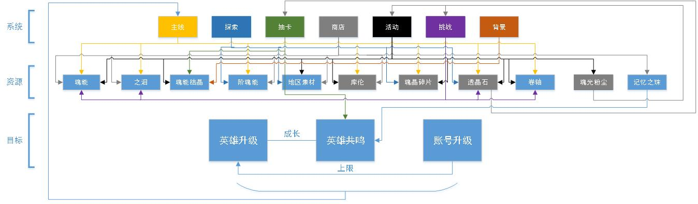

游戏体验与分析
万象物语数值试推
英雄等级资源表-以克拉克为例
所有英雄的攻击和血量都是以平均每级提高6%的幅度增长，而相同等级升级所需的魂能则完全一样。魂能需求在30级升31级别时候增幅最为显著，而此时所对应的主线剧情则是第四章末，显然，这种突变显然是雷亚有意而为。以玩家每天玩0.5-1小时算，升到30级需要1-2周，前两周资源的高度充沛（新手任务）和小幅消耗能够维持较好的留存率。而30级以后逐渐步入中期，资源产出逐渐放缓，而消耗加剧。一个英雄升到50级共需172k的魂能，升到30级只需要15.4k，占比仅有9%，30级到50级别的魂能高达157k，不氪金的话玩家凑够157k魂能可能需要1-2周。资源产出和消耗的“剪刀差”模型十分显著。
剪刀差模型：
资源循环图

从图中（鼠标右键-新标签页打开）可以看出，从资源角度来说，绝大部分资源都有丰富的产出路径，从系统来说，每个系统都能产出多样化的资源。这种设定的结果就是**游戏进行所需要的资源大部分都能从游戏产出，而并不依赖外部产出（氪金）**，问题只在于内部产出效率决定的发展时长。因此这款游戏并不氪。
**商店里存在着资源之间相互转化的机制。**一级资源魂晶碎片、透晶石和魂光粉尘必须依赖内外产出，且可转化为其他的二级资源。
**魂光粉尘是制约资源循环和发展速度的关键资源。**此资源只能从每周结算的活动排名中产出，决定着每天能够进行的其他活动和挑战次数，等于扼住了资源产出的大半壁江山（主线和探索的产出不足以维持快速发展），中期尤为明显，因为中期开始主线产出降低，而探索的产出尚未成熟。